VOCABULARY · 主題 2000 字 UNIT 15
Houses & apartments．房子與公寓
房子裡的房間、家具、家電和日常用品，共 51 個字。注意複數的變化和 go home 的說法。
共 51 個單字．點 🔊 聽發音
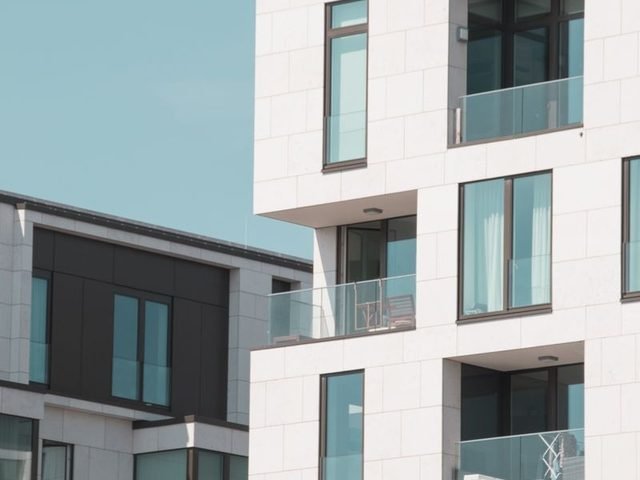
1apartmentn.
公寓
We live in an apartment on the fifth floor.我們住在五樓的一間公寓。
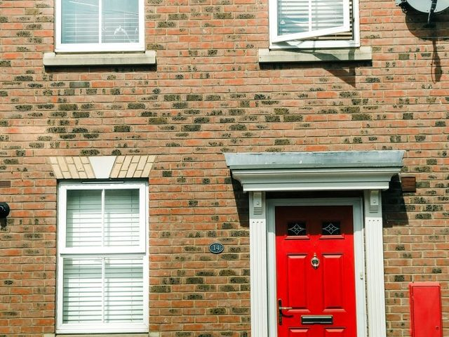
2housen.
房子；屋子
Their house has a red door.他們的房子有一扇紅色的門。
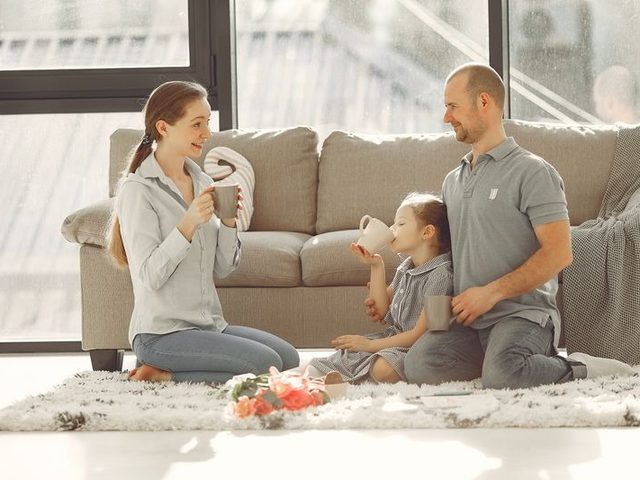
3homen./adv.
家；在家；回家
go home（不加 to）
I go home at five every day.我每天五點回家。
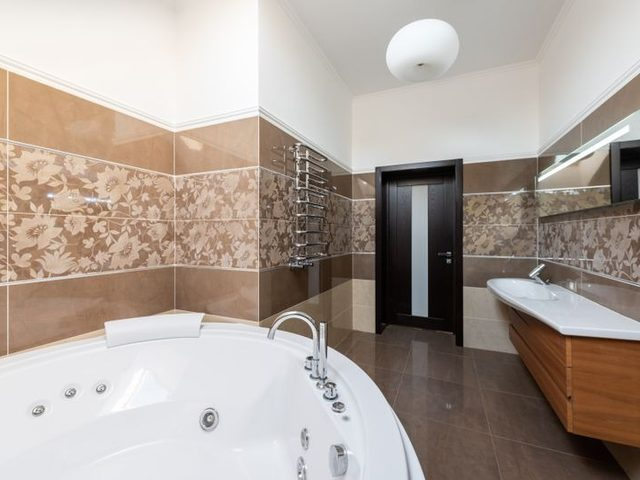
4bathroomn.
浴室；廁所
May I use your bathroom?我可以借用你的廁所嗎？
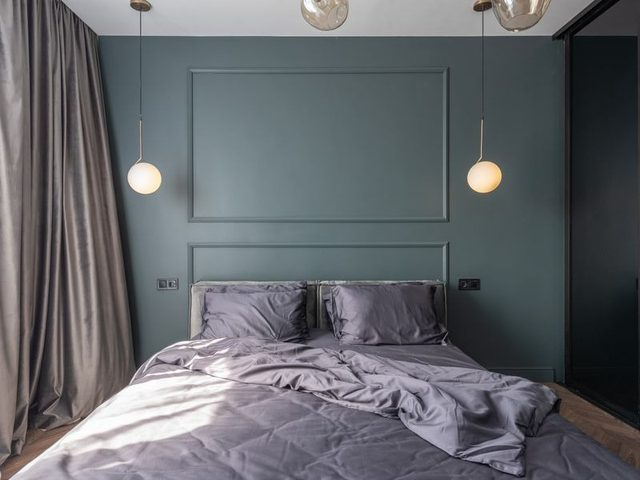
5bedroomn.
臥室
My bedroom is small but cozy.我的臥室很小但很舒適。

6dining roomn.
飯廳
We eat dinner in the dining room.我們在飯廳吃晚餐。
7gardenn.
花園
Grandma grows flowers in her garden.奶奶在她的花園裡種花。
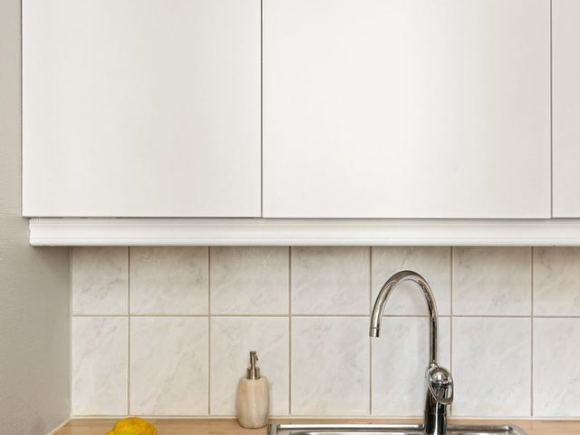
8kitchenn.
廚房
Dad is cooking in the kitchen.爸爸正在廚房煮飯。

9living roomn.
客廳
We watch TV in the living room.我們在客廳看電視。
10roomn.
房間；空間
空間不可數：no room
This room is too dark. Turn on the light.這個房間太暗了，開燈吧。
11yardn.
庭院；碼
front yard 前院
The kids are playing in the yard.孩子們在院子裡玩。
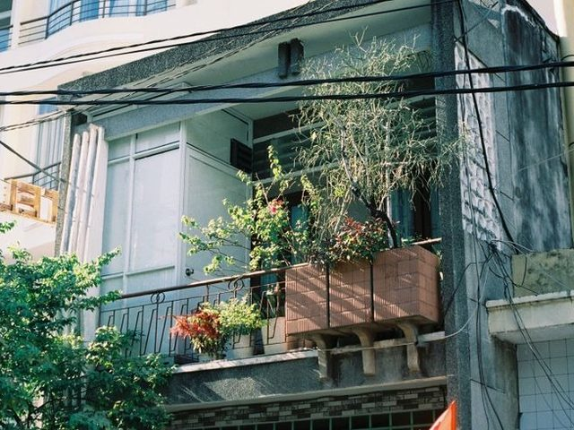
12balconyn.
陽台
複數 balconies
Mom hangs the clothes on the balcony.媽媽把衣服晾在陽台上。
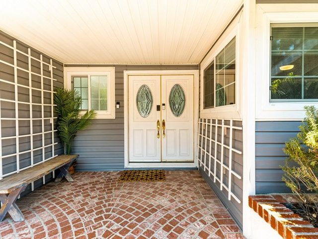
13doorn.
門
answer the door 應門
Please close the door.請把門關上。
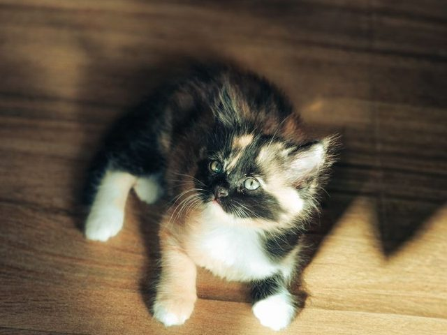
14floorn.
地板；樓層
on the second floor 在二樓
The cat is sleeping on the floor.貓在地板上睡覺。
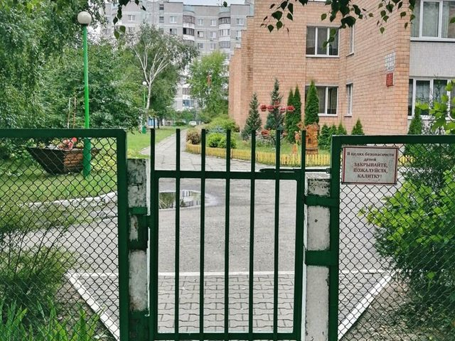
15gaten.
大門；出入口
Meet me at the school gate.在校門口和我碰面。
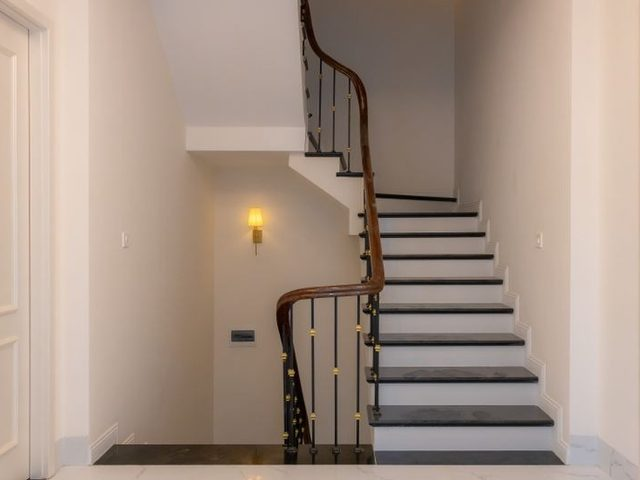
16stairsn.
樓梯
常用複數
Walk up the stairs to the second floor.走樓梯上二樓。
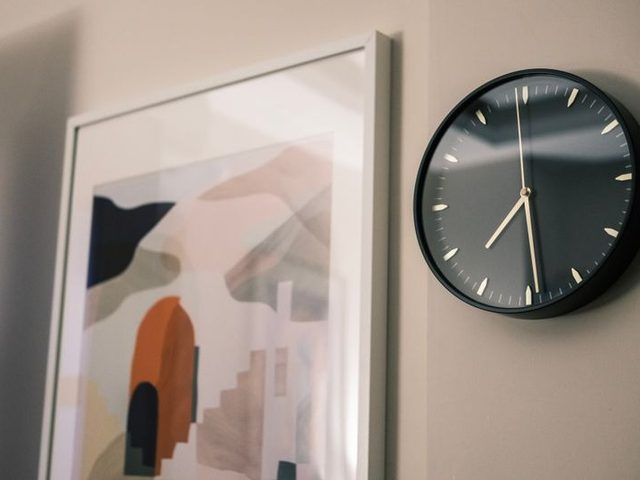
17walln.
牆
There is a clock on the wall.牆上有一個時鐘。
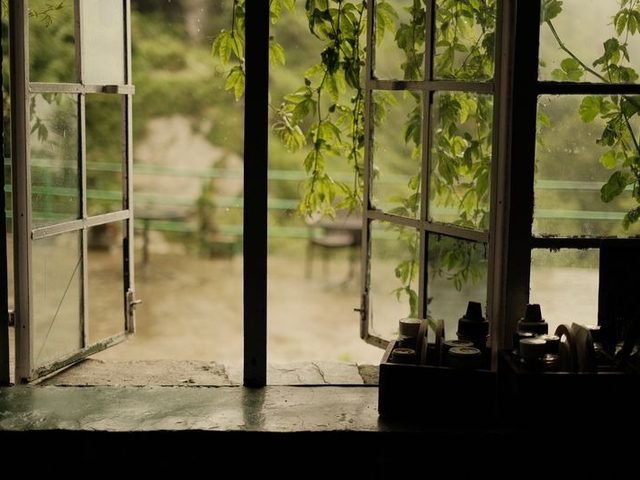
18windown.
窗戶
Can I open the window?我可以開窗嗎？
19bathn.
沐浴；洗澡
take a bath 泡澡
I take a bath before bed.我睡前洗澡。
20bedn.
床
go to bed 上床睡覺
It's ten o'clock. Go to bed.十點了，去睡覺吧。
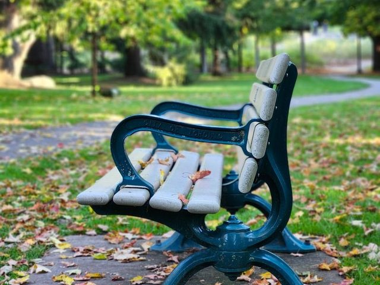
21benchn.
長椅；長凳
複數 benches
Let's sit on the bench and rest.我們坐在長椅上休息一下吧。
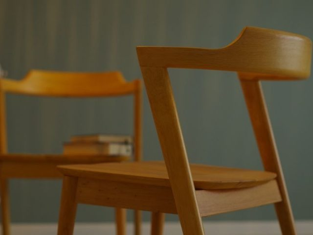
22chairn.
椅子
Please sit on the chair.請坐在椅子上。
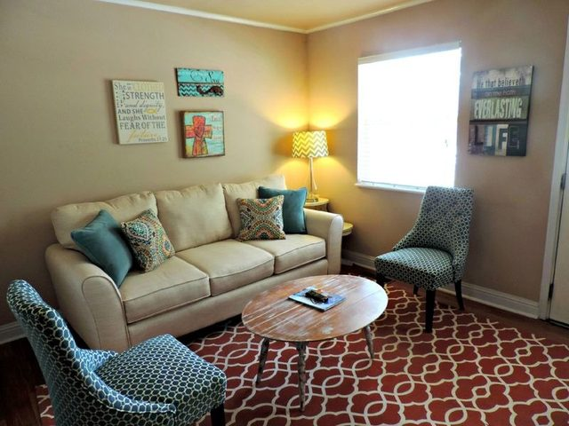
23couchn.
長沙發
複數 couches；= sofa
Dad fell asleep on the couch.爸爸在沙發上睡著了。
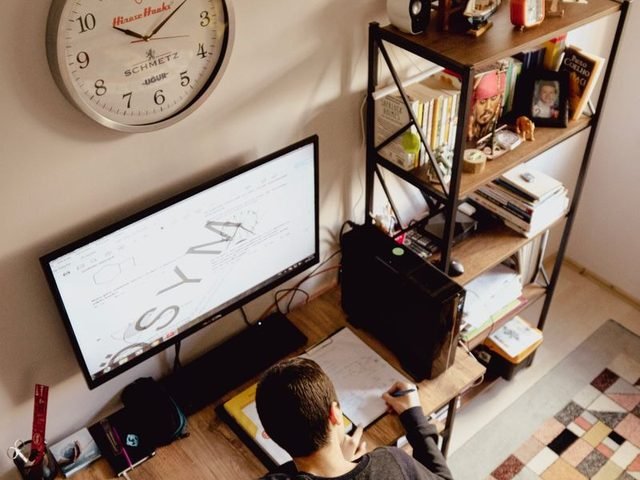
24deskn.
書桌
I do my homework at my desk.我在書桌前寫作業。
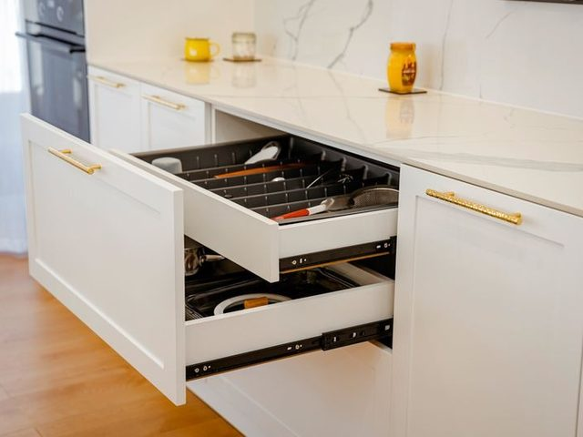
25drawern.
抽屜
The scissors are in the top drawer.剪刀在最上層的抽屜裡。
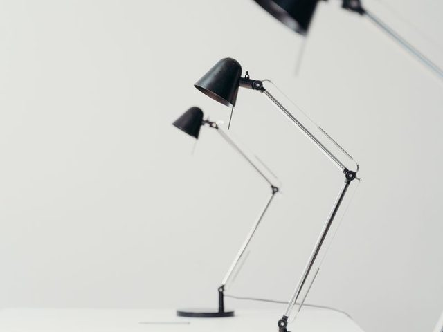
26lampn.
燈；檯燈
street lamp 路燈
Turn on the lamp when you read.看書時要開檯燈。
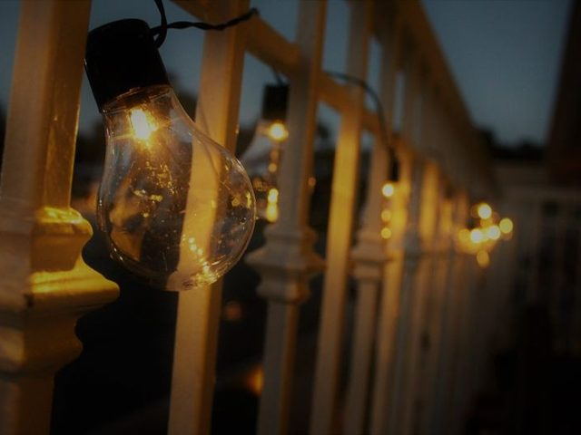
27lightn.
光；燈
光不可數，燈可數
Turn off the lights when you leave.離開時要關燈。
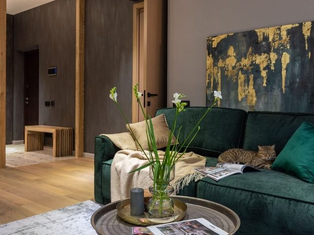
28sofan.
沙發
The sofa is big enough for four people.這張沙發夠坐四個人。
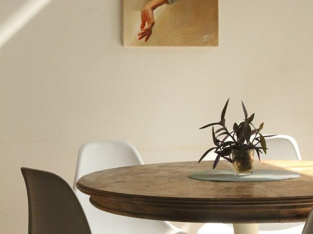
29tablen.
餐桌；桌子
Please set the table for dinner.請擺好餐桌準備吃晚餐。
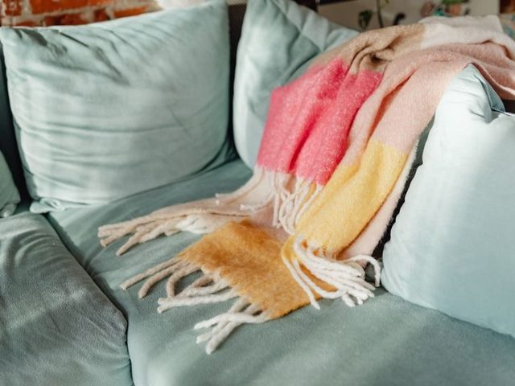
30blanketn.
毛毯
It's cold. Take a blanket.好冷，拿條毯子吧。
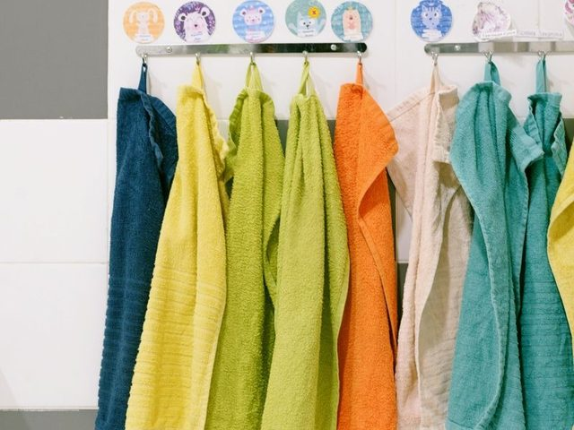
31toweln.
毛巾
Dry your hands with this towel.用這條毛巾擦乾手。
32cameran.
照相機
take photos 拍照
Don't forget your camera on the trip.旅行別忘了帶相機。
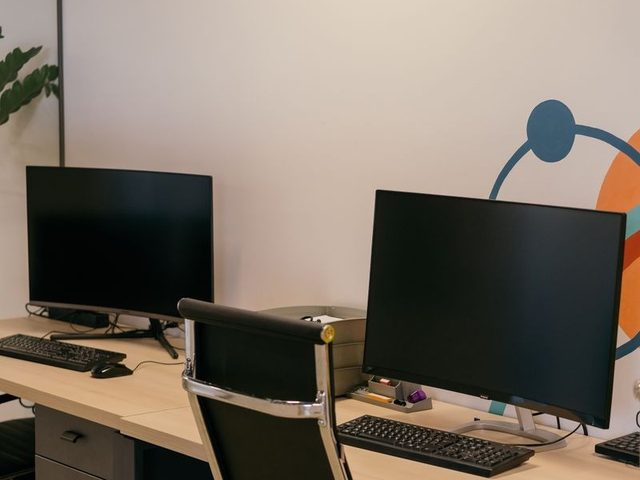
33computern.
電腦
I use the computer to look up words.我用電腦查單字。
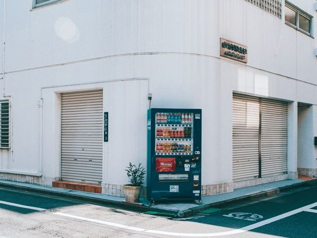
34machinen.
機器
washing machine 洗衣機
I bought a drink from the machine.我從販賣機買了一瓶飲料。
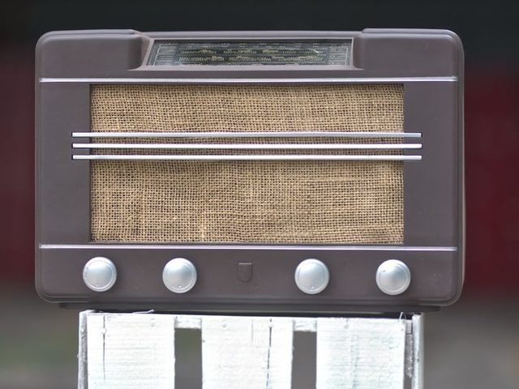
35radion.
收音機；無線電廣播
複數 radios
Grandpa listens to the radio every morning.爺爺每天早上聽收音機。
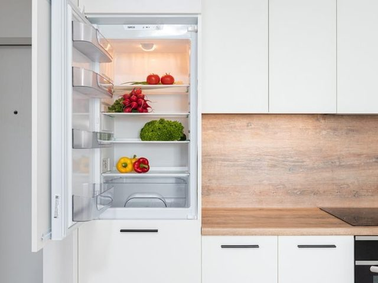
36refrigeratorn.
冰箱
= fridge
Put the milk in the refrigerator.把牛奶放進冰箱。
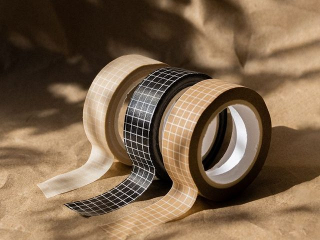
37tapen.
錄音帶；膠帶
Can you give me some tape?你可以給我一些膠帶嗎？
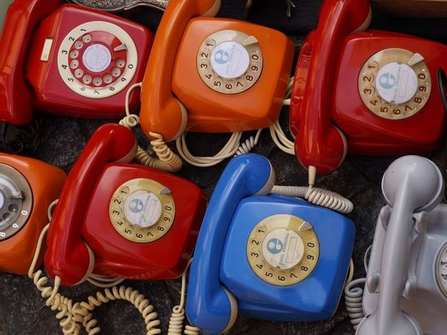
38telephonen.
電話
= phone；answer the phone 接電話
The telephone is ringing.電話在響。
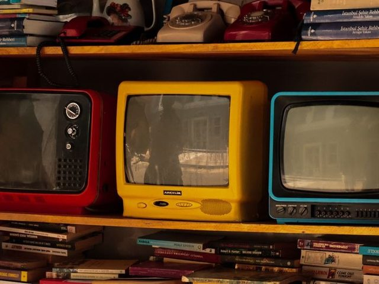
39televisionn.
電視機；電視節目
= TV；watch TV
We have a television in the living room.我們客廳有一台電視。
40videon.
影片；錄影帶
複數 videos
We watched a video about whales.我們看了一段關於鯨魚的影片。
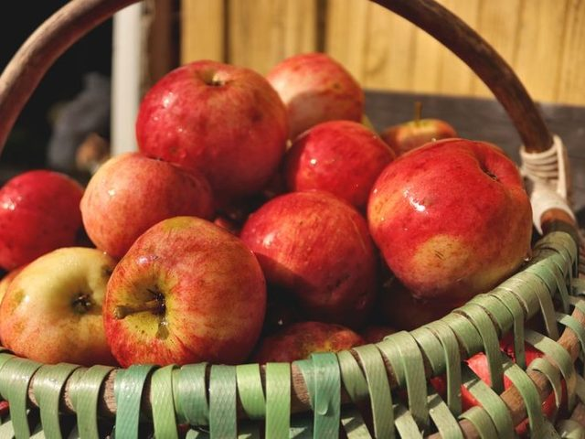
41basketn.
籃子
Put the apples in the basket.把蘋果放進籃子裡。
42candlen.
蠟燭
light a candle 點蠟燭
There are ten candles on the birthday cake.生日蛋糕上有十根蠟燭。
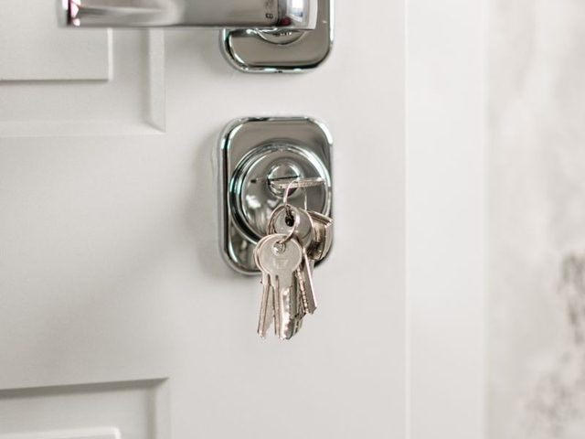
43keyn.
鑰匙
複數 keys
I can't find my keys.我找不到我的鑰匙。
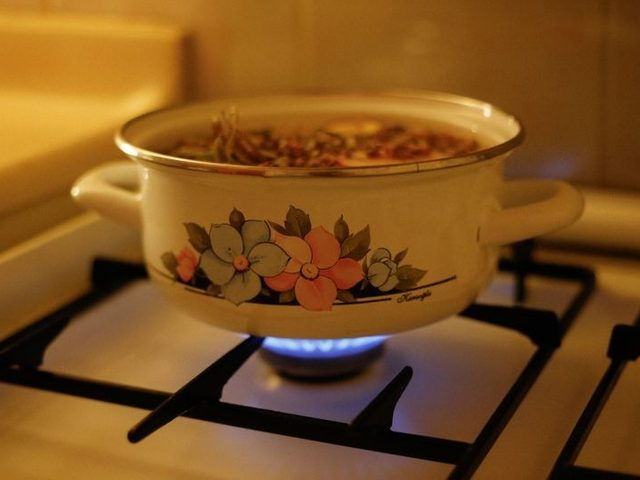
44potn.
鍋；壺；盆
a pot of soup 一鍋湯
Mom made a big pot of soup.媽媽煮了一大鍋湯。
45umbrellan.
雨傘
Take an umbrella. It's going to rain.帶把傘，快下雨了。
46buildv.
建造
build – built – built
They are building a new library.他們正在蓋一座新圖書館。
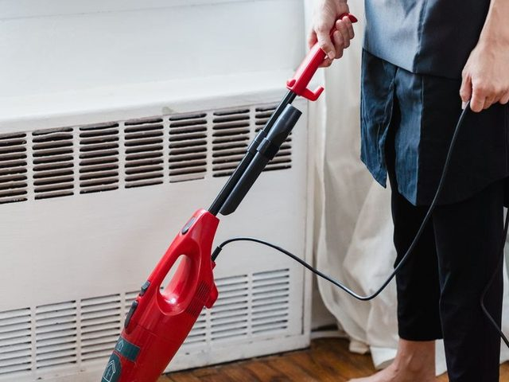
47cleanv./adj.
清潔；乾淨的
Please clean your room.請打掃你的房間。
48fixv.
修理
= repair
Dad fixed my bike.爸爸修好了我的腳踏車。
49washv.
洗
wash the dishes 洗碗
Wash your hands before you eat.吃東西前要洗手。
50roadn.
道路；街道
The road is wet after the rain.雨後路面是濕的。
51streetn.
街；街道
cross the street 過馬路
Look both ways before you cross the street.過馬路前要看兩邊。
FOCUS
房子裡的房間
| 英文 | 中文 | 在這裡做什麼 |
|---|---|---|
| living room | 客廳 | watch TV, sit on the sofa |
| bedroom | 臥室 | sleep, go to bed |
| kitchen | 廚房 | cook, wash the dishes |
| dining room | 飯廳 | eat dinner, set the table |
| bathroom | 浴室；廁所 | take a bath, wash your hands |
| balcony | 陽台 | hang the clothes |
FOCUS
要注意的複數
| 單數 | 複數 | 規則 |
|---|---|---|
| balcony | balconies | 子音 + y → 去 y 加 -ies |
| key | keys | 母音 + y → 直接加 -s |
| bench / couch | benches / couches | -ch 結尾加 -es |
| radio / video | radios / videos | 這兩個 -o 結尾只加 -s |
FOCUS
home 的用法
| 說法 | 中文 |
|---|---|
| go home / come home | 回家（home 是副詞，不加 to） |
| at home | 在家 |
| go to the kitchen | 去廚房（一般地點要加 to the） |
go home ✔ go to home ✘